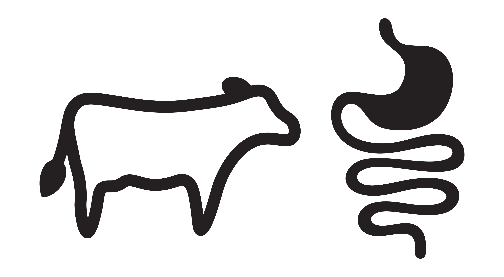
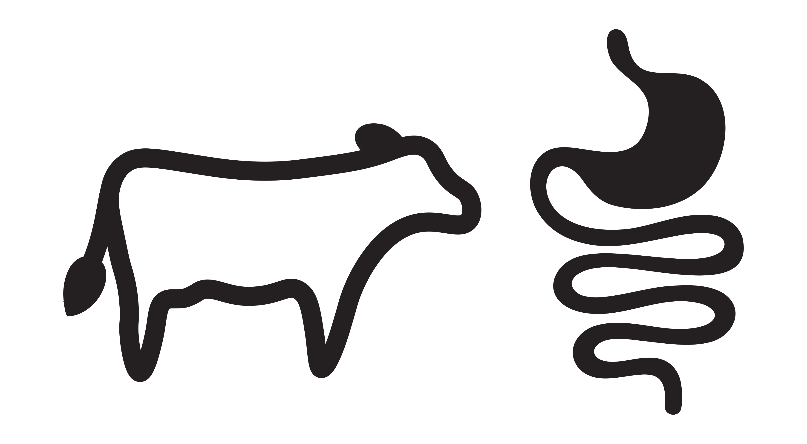

A2 Milk
Visual identity
Concept for a refined A2 Milk® brand identity, moving away from a generic design towards a better reflection of the brand's passion and belief in their unique selling point.
A minimal wordmark logo highlights a product of quality and regard, encouraging brand recognition.
A colour palette of vibrant and rich tones convey authenticity and wellness, whilst also aligning with industry standards.
A bold yet playful primary typeface, paired with a focused secondary typeface, together strike a balance between passion and quality.
A clean and minimal illustration style enhances shelf presence, with the gut visual clearly and efficiently portraying their individual ‘easier on digestion’ benefit.

 
